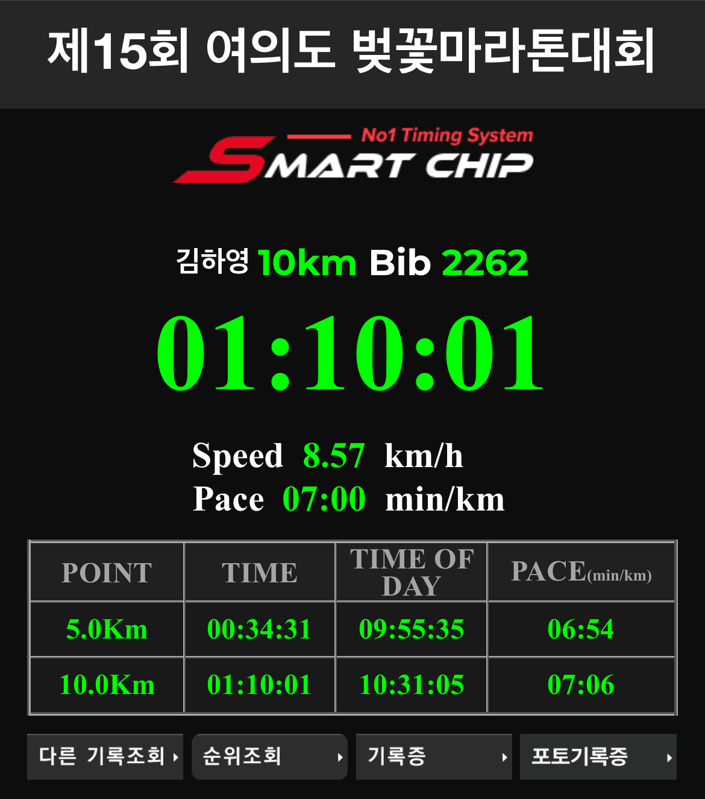

<!DOCTYPE html>
<html lang="en"><head><title>시작하고, 완수하기</title><meta charset="utf-8"/><link rel="preconnect" href="https://fonts.googleapis.com"/><link rel="preconnect" href="https://fonts.gstatic.com"/><link rel="stylesheet" href="https://fonts.googleapis.com/css2?family=IBM Plex Mono&amp;family=Schibsted Grotesk:wght@400;700&amp;family=Source Sans Pro:ital,wght@0,400;0,600;1,400;1,600&amp;display=swap"/><meta name="google-site-verification" content="J7M_TUQSjWBrqZt2V9LjuqwJzG5K17jb93vmWqmE2tM"/><link rel="preconnect" href="https://cdnjs.cloudflare.com" crossorigin="anonymous"/><meta name="viewport" content="width=device-width, initial-scale=1.0"/><meta name="og:site_name" content="🪴 hayoung"/><meta property="og:title" content="시작하고, 완수하기"/><meta property="og:type" content="website"/><meta name="twitter:card" content="summary_large_image"/><meta name="twitter:title" content="시작하고, 완수하기"/><meta name="twitter:description" content="게으른 완벽주의자 나는 아직 흔히 말하는 게으른 완벽주의자다. 후회하는 것을 극도로 싫어해서 어설프게 시도했다가 실패하면 시간 낭비라고 생각했고 볼펜 한 자루, 노트 한 권을 사더라도 한참을 알아보고 사는 편이다. 그래서 무엇인가를 시작할 때 준비가 되지 않았다고 느끼면 시작이 어렵다."/><meta property="og:description" content="게으른 완벽주의자 나는 아직 흔히 말하는 게으른 완벽주의자다. 후회하는 것을 극도로 싫어해서 어설프게 시도했다가 실패하면 시간 낭비라고 생각했고 볼펜 한 자루, 노트 한 권을 사더라도 한참을 알아보고 사는 편이다. 그래서 무엇인가를 시작할 때 준비가 되지 않았다고 느끼면 시작이 어렵다."/><meta property="og:image:type" content="image/webp"/><meta property="og:image:alt" content="게으른 완벽주의자 나는 아직 흔히 말하는 게으른 완벽주의자다. 후회하는 것을 극도로 싫어해서 어설프게 시도했다가 실패하면 시간 낭비라고 생각했고 볼펜 한 자루, 노트 한 권을 사더라도 한참을 알아보고 사는 편이다. 그래서 무엇인가를 시작할 때 준비가 되지 않았다고 느끼면 시작이 어렵다."/><meta property="og:image:width" content="1200"/><meta property="og:image:height" content="630"/><meta property="og:image:url" content="https://khy07181.github.io/blog/static/og-image.png"/><meta name="twitter:image" content="https://khy07181.github.io/blog/static/og-image.png"/><meta property="og:image" content="https://khy07181.github.io/blog/static/og-image.png"/><meta property="twitter:domain" content="khy07181.github.io/blog"/><meta property="og:url" content="https://khy07181.github.io/blog/2025/시작하고,-완수하기"/><meta property="twitter:url" content="https://khy07181.github.io/blog/2025/시작하고,-완수하기"/><link rel="icon" href="../static/icon.png"/><meta name="description" content="게으른 완벽주의자 나는 아직 흔히 말하는 게으른 완벽주의자다. 후회하는 것을 극도로 싫어해서 어설프게 시도했다가 실패하면 시간 낭비라고 생각했고 볼펜 한 자루, 노트 한 권을 사더라도 한참을 알아보고 사는 편이다. 그래서 무엇인가를 시작할 때 준비가 되지 않았다고 느끼면 시작이 어렵다."/><meta name="generator" content="Quartz"/><link href="../index.css" rel="stylesheet" type="text/css" spa-preserve/><link href="https://cdn.jsdelivr.net/npm/katex@0.16.11/dist/katex.min.css" rel="stylesheet" type="text/css" spa-preserve/><script src="../prescript.js" type="application/javascript" spa-preserve></script><script type="application/javascript" spa-preserve>const fetchData = fetch("../static/contentIndex.json").then(data => data.json())</script></head><body data-slug="2025/시작하고,-완수하기"><div id="quartz-root" class="page"><div id="quartz-body"><div class="left sidebar"><h2 class="page-title"><a href="..">🪴 hayoung</a></h2><div class="spacer mobile-only"></div><div class="search"><button class="search-button" id="search-button"><p>Search</p><svg role="img" xmlns="http://www.w3.org/2000/svg" viewBox="0 0 19.9 19.7"><title>Search</title><g class="search-path" fill="none"><path stroke-linecap="square" d="M18.5 18.3l-5.4-5.4"></path><circle cx="8" cy="8" r="7"></circle></g></svg></button><div id="search-container"><div id="search-space"><input autocomplete="off" id="search-bar" name="search" type="text" aria-label="Search for something" placeholder="Search for something"/><div id="search-layout" data-preview="true"></div></div></div></div><button class="darkmode" id="darkmode"><svg xmlns="http://www.w3.org/2000/svg" xmlns:xlink="http://www.w3.org/1999/xlink" version="1.1" id="dayIcon" x="0px" y="0px" viewBox="0 0 35 35" style="enable-background:new 0 0 35 35" xml:space="preserve" aria-label="Dark mode"><title>Dark mode</title><path d="M6,17.5C6,16.672,5.328,16,4.5,16h-3C0.672,16,0,16.672,0,17.5    S0.672,19,1.5,19h3C5.328,19,6,18.328,6,17.5z M7.5,26c-0.414,0-0.789,0.168-1.061,0.439l-2,2C4.168,28.711,4,29.086,4,29.5    C4,30.328,4.671,31,5.5,31c0.414,0,0.789-0.168,1.06-0.44l2-2C8.832,28.289,9,27.914,9,27.5C9,26.672,8.329,26,7.5,26z M17.5,6    C18.329,6,19,5.328,19,4.5v-3C19,0.672,18.329,0,17.5,0S16,0.672,16,1.5v3C16,5.328,16.671,6,17.5,6z M27.5,9    c0.414,0,0.789-0.168,1.06-0.439l2-2C30.832,6.289,31,5.914,31,5.5C31,4.672,30.329,4,29.5,4c-0.414,0-0.789,0.168-1.061,0.44    l-2,2C26.168,6.711,26,7.086,26,7.5C26,8.328,26.671,9,27.5,9z M6.439,8.561C6.711,8.832,7.086,9,7.5,9C8.328,9,9,8.328,9,7.5    c0-0.414-0.168-0.789-0.439-1.061l-2-2C6.289,4.168,5.914,4,5.5,4C4.672,4,4,4.672,4,5.5c0,0.414,0.168,0.789,0.439,1.06    L6.439,8.561z M33.5,16h-3c-0.828,0-1.5,0.672-1.5,1.5s0.672,1.5,1.5,1.5h3c0.828,0,1.5-0.672,1.5-1.5S34.328,16,33.5,16z     M28.561,26.439C28.289,26.168,27.914,26,27.5,26c-0.828,0-1.5,0.672-1.5,1.5c0,0.414,0.168,0.789,0.439,1.06l2,2    C28.711,30.832,29.086,31,29.5,31c0.828,0,1.5-0.672,1.5-1.5c0-0.414-0.168-0.789-0.439-1.061L28.561,26.439z M17.5,29    c-0.829,0-1.5,0.672-1.5,1.5v3c0,0.828,0.671,1.5,1.5,1.5s1.5-0.672,1.5-1.5v-3C19,29.672,18.329,29,17.5,29z M17.5,7    C11.71,7,7,11.71,7,17.5S11.71,28,17.5,28S28,23.29,28,17.5S23.29,7,17.5,7z M17.5,25c-4.136,0-7.5-3.364-7.5-7.5    c0-4.136,3.364-7.5,7.5-7.5c4.136,0,7.5,3.364,7.5,7.5C25,21.636,21.636,25,17.5,25z"></path></svg><svg xmlns="http://www.w3.org/2000/svg" xmlns:xlink="http://www.w3.org/1999/xlink" version="1.1" id="nightIcon" x="0px" y="0px" viewBox="0 0 100 100" style="enable-background:new 0 0 100 100" xml:space="preserve" aria-label="Light mode"><title>Light mode</title><path d="M96.76,66.458c-0.853-0.852-2.15-1.064-3.23-0.534c-6.063,2.991-12.858,4.571-19.655,4.571  C62.022,70.495,50.88,65.88,42.5,57.5C29.043,44.043,25.658,23.536,34.076,6.47c0.532-1.08,0.318-2.379-0.534-3.23  c-0.851-0.852-2.15-1.064-3.23-0.534c-4.918,2.427-9.375,5.619-13.246,9.491c-9.447,9.447-14.65,22.008-14.65,35.369  c0,13.36,5.203,25.921,14.65,35.368s22.008,14.65,35.368,14.65c13.361,0,25.921-5.203,35.369-14.65  c3.872-3.871,7.064-8.328,9.491-13.246C97.826,68.608,97.611,67.309,96.76,66.458z"></path></svg></button><div class="explorer"><button type="button" id="mobile-explorer" class="collapsed hide-until-loaded" data-behavior="collapse" data-collapsed="collapsed" data-savestate="true" data-tree="[{&quot;path&quot;:&quot;2025_테스트&quot;,&quot;collapsed&quot;:true},{&quot;path&quot;:&quot;2025&quot;,&quot;collapsed&quot;:true}]" data-mobile="true" aria-controls="explorer-content" aria-expanded="false"><svg xmlns="http://www.w3.org/2000/svg" width="24" height="24" viewBox="0 0 24 24" stroke-width="2" stroke-linecap="round" stroke-linejoin="round" class="lucide lucide-menu"><line x1="4" x2="20" y1="12" y2="12"></line><line x1="4" x2="20" y1="6" y2="6"></line><line x1="4" x2="20" y1="18" y2="18"></line></svg></button><button type="button" id="desktop-explorer" class="title-button" data-behavior="collapse" data-collapsed="collapsed" data-savestate="true" data-tree="[{&quot;path&quot;:&quot;2025_테스트&quot;,&quot;collapsed&quot;:true},{&quot;path&quot;:&quot;2025&quot;,&quot;collapsed&quot;:true}]" data-mobile="false" aria-controls="explorer-content" aria-expanded="true"><h2>Explorer</h2><svg xmlns="http://www.w3.org/2000/svg" width="14" height="14" viewBox="5 8 14 8" fill="none" stroke="currentColor" stroke-width="2" stroke-linecap="round" stroke-linejoin="round" class="fold"><polyline points="6 9 12 15 18 9"></polyline></svg></button><div id="explorer-content"><ul class="overflow" id="explorer-ul"><li><div class="folder-outer open"><ul style="padding-left:0;" class="content" data-folderul><li><div class="folder-container"><svg xmlns="http://www.w3.org/2000/svg" width="12" height="12" viewBox="5 8 14 8" fill="none" stroke="currentColor" stroke-width="2" stroke-linecap="round" stroke-linejoin="round" class="folder-icon"><polyline points="6 9 12 15 18 9"></polyline></svg><div data-folderpath="2025_테스트"><button class="folder-button"><span class="folder-title">2025_테스트</span></button></div></div><div class="folder-outer "><ul style="padding-left:1.4rem;" class="content" data-folderul="2025_테스트"><li><a href="../2025_테스트/CAP" data-for="2025_테스트/CAP">CAP 이론</a></li></ul></div></li><li><div class="folder-container"><svg xmlns="http://www.w3.org/2000/svg" width="12" height="12" viewBox="5 8 14 8" fill="none" stroke="currentColor" stroke-width="2" stroke-linecap="round" stroke-linejoin="round" class="folder-icon"><polyline points="6 9 12 15 18 9"></polyline></svg><div data-folderpath="2025"><button class="folder-button"><span class="folder-title">hayoung blog</span></button></div></div><div class="folder-outer "><ul style="padding-left:1.4rem;" class="content" data-folderul="2025"><li><a href="../2025/CAP" data-for="2025/CAP">CAP 이론</a></li><li><a href="../2025/GRASP-Pattern" data-for="2025/GRASP-Pattern">GRASP Pattern</a></li><li><a href="../2025/Obsidian과-Quartz로-블로그-만들기" data-for="2025/Obsidian과-Quartz로-블로그-만들기">Obsidian과 Quartz로 블로그 만들기</a></li><li><a href="../2025/PARA-Method" data-for="2025/PARA-Method">PARA Method</a></li><li><a href="../2025/PostgreSQL-Function" data-for="2025/PostgreSQL-Function">PostgreSQL Function</a></li><li><a href="../2025/Time-Tracking-도구-사용-여정기---1" data-for="2025/Time-Tracking-도구-사용-여정기---1">Time Tracking 도구 사용 여정기 - 1</a></li><li><a href="../2025/Trie" data-for="2025/Trie">Trie</a></li><li><a href="../2025/나만의-독서-환경-만들기" data-for="2025/나만의-독서-환경-만들기">나만의 독서 환경 만들기</a></li><li><a href="../2025/나의-Mac-초기-설정" data-for="2025/나의-Mac-초기-설정">나의 Mac 초기 설정</a></li><li><a href="../2025/문체의-종류" data-for="2025/문체의-종류">문체의 종류</a></li><li><a href="../2025/브라우저-저장소의-종류와-특성" data-for="2025/브라우저-저장소의-종류와-특성">브라우저 저장소의 종류와 특성</a></li><li><a href="../2025/시작하고,-완수하기" data-for="2025/시작하고,-완수하기">시작하고, 완수하기</a></li><li><a href="../2025/우물-안-개구리의-메모어-회고-모임-참여-후기" data-for="2025/우물-안-개구리의-메모어-회고-모임-참여-후기">우물 안 개구리의 메모어 회고 모임 참여 후기</a></li><li><a href="../2025/침묵의-나선" data-for="2025/침묵의-나선">침묵의 나선</a></li><li><a href="../2025/카메라-선택-비교" data-for="2025/카메라-선택-비교">카메라 선택 비교</a></li><li><a href="../2025/회고-모임-'메모어'-마무리-후기" data-for="2025/회고-모임-'메모어'-마무리-후기">회고 모임 '메모어' 마무리 후기</a></li><li><a href="../2025/회고-방법론" data-for="2025/회고-방법론">회고 방법론</a></li></ul></div></li><li><div class="folder-outer "><ul style="padding-left:0;" class="content" data-folderul></ul></div></li></ul></div></li><li id="explorer-end"></li></ul></div></div></div><div class="center"><div class="page-header"><div class="popover-hint"><nav class="breadcrumb-container" aria-label="breadcrumbs"><div class="breadcrumb-element"><a href="../">Home</a><p> ❯ </p></div><div class="breadcrumb-element"><a href="../2025/">hayoung blog</a><p> ❯ </p></div><div class="breadcrumb-element"><a href>시작하고, 완수하기</a></div></nav><h1 class="article-title">시작하고, 완수하기</h1><p show-comma="true" class="content-meta"><time datetime="2025-03-08T08:16:00.000Z">Mar 08, 2025</time><span>10 min read</span></p></div></div><article class="popover-hint"><h2 id="게으른-완벽주의자">게으른 완벽주의자<a role="anchor" aria-hidden="true" tabindex="-1" data-no-popover="true" href="#게으른-완벽주의자" class="internal"><svg width="18" height="18" viewBox="0 0 24 24" fill="none" stroke="currentColor" stroke-width="2" stroke-linecap="round" stroke-linejoin="round"><path d="M10 13a5 5 0 0 0 7.54.54l3-3a5 5 0 0 0-7.07-7.07l-1.72 1.71"></path><path d="M14 11a5 5 0 0 0-7.54-.54l-3 3a5 5 0 0 0 7.07 7.07l1.71-1.71"></path></svg></a></h2>
<p>나는 아직 흔히 말하는 게으른 완벽주의자다.</p>
<p>후회하는 것을 극도로 싫어해서 어설프게 시도했다가 실패하면 시간 낭비라고 생각했고 볼펜 한 자루, 노트 한 권을 사더라도 한참을 알아보고 사는 편이다.</p>
<p>그래서 무엇인가를 시작할 때 준비가 되지 않았다고 느끼면 시작이 어렵다.</p>
<p>학교에 다닐 때도 미루고 미루다 시험 직전에 벼락치기를 하고, 과제 마감 기한 직전 제출 버튼을 누르곤 했다.</p>
<p>어쩌다 과제를 미리 끝냈을 때는, 마감 기한까지 매일 실수한 내용은 없는지, 추가 또는 수정 해야 할 내용은 없는지 확인하다가 결국 마감 기한 직전 제출 버튼을 눌렀다.</p>
<p>과제에 소요되는 시간을 3일로 예상했다면 미루다 마감 3일 전에 맞춰서 시작하는 내 자신에게 자기혐오를 느낀 적도 있다.</p>
<p>완벽을 기다리다 보면 아예 시작하지 못하는 경우가 많다. 이를 극복하기 위해 두 가지 방식을 시도했고, 작은 변화들이 생기기 시작했다.</p>
<h2 id="상황에-나를-던지기">상황에 나를 던지기<a role="anchor" aria-hidden="true" tabindex="-1" data-no-popover="true" href="#상황에-나를-던지기" class="internal"><svg width="18" height="18" viewBox="0 0 24 24" fill="none" stroke="currentColor" stroke-width="2" stroke-linecap="round" stroke-linejoin="round"><path d="M10 13a5 5 0 0 0 7.54.54l3-3a5 5 0 0 0-7.07-7.07l-1.72 1.71"></path><path d="M14 11a5 5 0 0 0-7.54-.54l-3 3a5 5 0 0 0 7.07 7.07l1.71-1.71"></path></svg></a></h2>
<p>예전에 누군가로부터 본인은 자신을 도전적인 상황에 고의로 밀어 넣는 것을 의도한다고 들은 적이 있다.</p>
<p>나와는 정반대 생각에, ‘시작하지 못하고 있는 것보다 훨씬 낫다’라는 생각에, 대단하다고 생각했다.</p>
<p>또 <a href="https://thebetter.today/posts/47261927" class="external">누군가<svg aria-hidden="true" class="external-icon" style="max-width:0.8em;max-height:0.8em;" viewBox="0 0 512 512"><path d="M320 0H288V64h32 82.7L201.4 265.4 178.7 288 224 333.3l22.6-22.6L448 109.3V192v32h64V192 32 0H480 320zM32 32H0V64 480v32H32 456h32V480 352 320H424v32 96H64V96h96 32V32H160 32z"></path></svg></a>는 본인의 별명을 ‘2주 뒤에 뵙겠습니다’라고 소개한다.</p>
<p>새로운 지식을 발견하면 강의나 일정을 2주 뒤에 잡아버리면 2주 후에는 상황에 맞춰 본인이 소화할 수 있는 상태가 된다는 것이다.</p>
<p>최근에도 새로운 회사 동료로부터 상황에 나를 던지고 해내는 것을 좋아한다고 얘기를 나눴다.</p>
<p>이 정도면 ‘나를 상황에 던져 봐도 좋을 것 같다’ 생각이 들어 예전부터 계획만 세웠던 블로그를 만들기 위해 회사 동료분들과 함께하는 블로그 글쓰기 스터디에 참여하고 싶다고 하고 시작해 버렸다.</p>
<p>블로그를 만들지도 않은 상태였지만, 나를 상황에 던지자 어느새 블로그 플랫폼을 알아보고 개설한 뒤 그 과정을 첫 포스팅으로 작성했다.</p>
<p>상황에 나를 던지지 않았다면 몇 개월을 더 미루다가 시도조차 하지 않았을지도 모르지만, 환경을 먼저 만들어 놓으니 자연스럽게 실행하게 되었다.</p>
<p>러닝도 마찬가지였다. 여름엔 덥다고 겨울엔 춥다고 시작을 미루던 차에 마라톤 10km도 신청해 버렸다.</p>
<p>일정이 정해지자 자연스럽게 러닝을 시작하고, 필요한 러닝화를 구매했다.</p>
<p>계획했던 것보다는 훨씬 적었지만, 일주일에 1~2번은 5km 이상 뛰면서 몇 년 만에 숨이 차도록 달려봤다.</p>
<p>완주를 목표로 1시간 20분~30분 정도 예상했지만, 예상보다 훨씬 좋은 기록으로 10km를 완주할 수 있었다.</p>
<p></p>
<p><del>2초만 빨리 들어왔더라면..</del></p>
<p>앞으로도 마라톤을 나가진 않더라도 건강을 위해 꾸준히 러닝을 실천할 계획이다.</p>
<p>실패해도 괜찮다. 시작하지 않는 것보다 실패하더라도 해보는 것이 낫다.</p>
<p>때로는 상황에 나를 던지고 일단 시작하는 것이 필요하다는 것을 배웠다.</p>
<h2 id="퀘스트-완수하기">퀘스트 완수하기<a role="anchor" aria-hidden="true" tabindex="-1" data-no-popover="true" href="#퀘스트-완수하기" class="internal"><svg width="18" height="18" viewBox="0 0 24 24" fill="none" stroke="currentColor" stroke-width="2" stroke-linecap="round" stroke-linejoin="round"><path d="M10 13a5 5 0 0 0 7.54.54l3-3a5 5 0 0 0-7.07-7.07l-1.72 1.71"></path><path d="M14 11a5 5 0 0 0-7.54-.54l-3 3a5 5 0 0 0 7.07 7.07l1.71-1.71"></path></svg></a></h2>
<p>목표를 세우는 것은 쉽지만, 실행하는 것은 어렵다.</p>
<p>우연히 <a href="https://zzsza.github.io/diary/2023/12/17/live-like-a-game/" class="external">삶을 바라보는 태도 - 인생을 게임처럼 살아보기<svg aria-hidden="true" class="external-icon" style="max-width:0.8em;max-height:0.8em;" viewBox="0 0 512 512"><path d="M320 0H288V64h32 82.7L201.4 265.4 178.7 288 224 333.3l22.6-22.6L448 109.3V192v32h64V192 32 0H480 320zM32 32H0V64 480v32H32 456h32V480 352 320H424v32 96H64V96h96 32V32H160 32z"></path></svg></a>라는 글을 보고 ‘내 삶에도 퀘스트와 보상을 적용해 보면 재밌겠다’라는 생각이 들었다.</p>
<p>목표를 단순히 해야 할 일로 두기보다는, 게임 속 퀘스트처럼 설정하고 보상을 주는 방식을 시도 해봤다.</p>
<p>평소 가지고 싶은 물건이 생기면 한참을 고민하다가 구매해야 할 합리적인 이유를 만들어(?) 스스로를 설득한 후 구매하곤 했다.</p>
<p>하지만 이제는 사고 싶은 물건이 생기면 구매해야할 이유를 찾기보다 이를 얻기 위한 퀘스트를 설정하고 달성하면 보상을 받는 방식을 적용해 보고 있다.</p>
<p>ebook 리더기를 사고 싶다면 책 읽는 습관을 먼저 들이는 것이 구매 시 효과가 좋은 것처럼 퀘스트와 보상이 비슷한 성격을 가지는 것도 달성하는 것에 도움이 되는 것 같다.</p>
<p>생성한 퀘스트 중 일부는 다음과 같다.</p>
<blockquote class="callout info" data-callout="info">
<div class="callout-title">
                  <div class="callout-icon"></div>
                  <div class="callout-title-inner"><p>퀘스트 목록 </p></div>
                  
                </div>
<div class="callout-content">
<ul class="contains-task-list">
<li class="task-list-item"><input type="checkbox" checked disabled/> 한 달에 책 2권 읽기</li>
<li>🎁 해리포터 ebook 전 집</li>
<li class="task-list-item"><input type="checkbox" checked disabled/> 러닝 시작하기, 일상화로 먼저 뛰어보기</li>
<li>🎁 러닝화</li>
<li class="task-list-item"><input type="checkbox" disabled/> 다이어트(-10kg), 건강한 몸 만들기</li>
<li>🎁 허먼밀러 에어론 의자</li>
<li class="task-list-item"><input type="checkbox" disabled/> 개발에 다시 관심을 가지고 공부하기</li>
<li>🎁 칼디짓 ts4</li>
<li class="task-list-item"><input type="checkbox" disabled/> 퇴근 후 책상에 앉아있는 시간 늘리기</li>
<li>🎁 c타입 매직키보드, 트랙패드</li>
<li class="task-list-item"><input type="checkbox" disabled/> 2주에 1회 블로그 포스팅</li>
<li>🎁 글쓰기 능력, 사고력, 표현력 향상</li>
<li class="task-list-item"><input type="checkbox" disabled/> 하루에 감사했던 일 3가지 기록하기</li>
<li>🎁 삶의 만족도 향상, 긍정적인 마인드</li>
<li class="task-list-item"><input type="checkbox" disabled/> 주변 사람들에게 먼저 대화하는 연습하기</li>
<li>🎁관계 유지 및 소통 능력 향상</li>
</ul>
</div>
</blockquote>
<p>‘그냥 소비욕 가득한 사람의 합리화 목록 아닌가?’ 생각이 들 정도로 외재적 보상이 많지만, 뭐라도 하고 사는 게 어디야..</p>
<p><del>모르겠고 허먼밀러 빨리 사고 싶다</del></p>
<p>외재적 보상은 너무나도 달콤하지만, 단순히 목표를 달성하고 물건을 얻는 것을 넘어 더 나은 사람이 되기 위한 내재적 보상도 매우 중요하다.</p>
<p>적절한 보상이 목표 달성의 동기가 된다면, 미루는 습관을 줄이고 목표를 달성하는 데에 도움이 된다.</p>
<h2 id="지속-가능한-변화-만들기">지속 가능한 변화 만들기<a role="anchor" aria-hidden="true" tabindex="-1" data-no-popover="true" href="#지속-가능한-변화-만들기" class="internal"><svg width="18" height="18" viewBox="0 0 24 24" fill="none" stroke="currentColor" stroke-width="2" stroke-linecap="round" stroke-linejoin="round"><path d="M10 13a5 5 0 0 0 7.54.54l3-3a5 5 0 0 0-7.07-7.07l-1.72 1.71"></path><path d="M14 11a5 5 0 0 0-7.54-.54l-3 3a5 5 0 0 0 7.07 7.07l1.71-1.71"></path></svg></a></h2>
<p>변화는 단번에 이루어지지 않기 때문에 이를 지속하는 것이 더욱 중요하다.</p>
<p>완벽한 준비를 기다리지 않고 시작하는 것은 변화의 첫걸음이지만, 그 변화를 지속할 방법이 없다면 결국 원래 상태로 돌아가게 된다.</p>
<p>실패를 두려워하지 않고 적절한 보상을 통한 동기부여를 유지하며 꾸준히 지속 가능한 변화를 만들어 낸다면 조금씩 더 나은 사람이 되어갈 것만 같다.</p></article><hr/><div class="page-footer"><div class="giscus" data-repo="khy07181/blog" data-repo-id="R_kgDON9-dEA" data-category="Announcements" data-category-id="DIC_kwDON9-dEM4CnOik" data-mapping="url" data-strict="1" data-reactions-enabled="1" data-input-position="bottom" data-light-theme="light" data-dark-theme="dark" data-theme-url="https://khy07181.github.io/blog/static/giscus"></div></div></div><div class="right sidebar"><div class="graph"><h3>Graph View</h3><div class="graph-outer"><div id="graph-container" data-cfg="{&quot;drag&quot;:true,&quot;zoom&quot;:true,&quot;depth&quot;:1,&quot;scale&quot;:1.1,&quot;repelForce&quot;:0.5,&quot;centerForce&quot;:0.3,&quot;linkDistance&quot;:30,&quot;fontSize&quot;:0.6,&quot;opacityScale&quot;:1,&quot;showTags&quot;:true,&quot;removeTags&quot;:[],&quot;focusOnHover&quot;:false,&quot;enableRadial&quot;:false}"></div><button id="global-graph-icon" aria-label="Global Graph"><svg version="1.1" xmlns="http://www.w3.org/2000/svg" xmlns:xlink="http://www.w3.org/1999/xlink" x="0px" y="0px" viewBox="0 0 55 55" fill="currentColor" xml:space="preserve"><path d="M49,0c-3.309,0-6,2.691-6,6c0,1.035,0.263,2.009,0.726,2.86l-9.829,9.829C32.542,17.634,30.846,17,29,17
                s-3.542,0.634-4.898,1.688l-7.669-7.669C16.785,10.424,17,9.74,17,9c0-2.206-1.794-4-4-4S9,6.794,9,9s1.794,4,4,4
                c0.74,0,1.424-0.215,2.019-0.567l7.669,7.669C21.634,21.458,21,23.154,21,25s0.634,3.542,1.688,4.897L10.024,42.562
                C8.958,41.595,7.549,41,6,41c-3.309,0-6,2.691-6,6s2.691,6,6,6s6-2.691,6-6c0-1.035-0.263-2.009-0.726-2.86l12.829-12.829
                c1.106,0.86,2.44,1.436,3.898,1.619v10.16c-2.833,0.478-5,2.942-5,5.91c0,3.309,2.691,6,6,6s6-2.691,6-6c0-2.967-2.167-5.431-5-5.91
                v-10.16c1.458-0.183,2.792-0.759,3.898-1.619l7.669,7.669C41.215,39.576,41,40.26,41,41c0,2.206,1.794,4,4,4s4-1.794,4-4
                s-1.794-4-4-4c-0.74,0-1.424,0.215-2.019,0.567l-7.669-7.669C36.366,28.542,37,26.846,37,25s-0.634-3.542-1.688-4.897l9.665-9.665
                C46.042,11.405,47.451,12,49,12c3.309,0,6-2.691,6-6S52.309,0,49,0z M11,9c0-1.103,0.897-2,2-2s2,0.897,2,2s-0.897,2-2,2
                S11,10.103,11,9z M6,51c-2.206,0-4-1.794-4-4s1.794-4,4-4s4,1.794,4,4S8.206,51,6,51z M33,49c0,2.206-1.794,4-4,4s-4-1.794-4-4
                s1.794-4,4-4S33,46.794,33,49z M29,31c-3.309,0-6-2.691-6-6s2.691-6,6-6s6,2.691,6,6S32.309,31,29,31z M47,41c0,1.103-0.897,2-2,2
                s-2-0.897-2-2s0.897-2,2-2S47,39.897,47,41z M49,10c-2.206,0-4-1.794-4-4s1.794-4,4-4s4,1.794,4,4S51.206,10,49,10z"></path></svg></button></div><div id="global-graph-outer"><div id="global-graph-container" data-cfg="{&quot;drag&quot;:true,&quot;zoom&quot;:true,&quot;depth&quot;:-1,&quot;scale&quot;:0.9,&quot;repelForce&quot;:0.5,&quot;centerForce&quot;:0.3,&quot;linkDistance&quot;:30,&quot;fontSize&quot;:0.6,&quot;opacityScale&quot;:1,&quot;showTags&quot;:true,&quot;removeTags&quot;:[],&quot;focusOnHover&quot;:true,&quot;enableRadial&quot;:true}"></div></div></div><div class="toc desktop-only"><button type="button" id="toc" class aria-controls="toc-content" aria-expanded="true"><h3>Table of Contents</h3><svg xmlns="http://www.w3.org/2000/svg" width="24" height="24" viewBox="0 0 24 24" fill="none" stroke="currentColor" stroke-width="2" stroke-linecap="round" stroke-linejoin="round" class="fold"><polyline points="6 9 12 15 18 9"></polyline></svg></button><div id="toc-content" class><ul class="overflow"><li class="depth-0"><a href="#게으른-완벽주의자" data-for="게으른-완벽주의자">게으른 완벽주의자</a></li><li class="depth-0"><a href="#상황에-나를-던지기" data-for="상황에-나를-던지기">상황에 나를 던지기</a></li><li class="depth-0"><a href="#퀘스트-완수하기" data-for="퀘스트-완수하기">퀘스트 완수하기</a></li><li class="depth-0"><a href="#지속-가능한-변화-만들기" data-for="지속-가능한-변화-만들기">지속 가능한 변화 만들기</a></li></ul></div></div><div class="backlinks"><h3>Backlinks</h3><ul class="overflow"><li><a href="../2025/우물-안-개구리의-메모어-회고-모임-참여-후기" class="internal">우물 안 개구리의 메모어 회고 모임 참여 후기</a></li></ul></div></div><footer class><p>Created with <a href="https://github.com/khy07181">hayoung</a> © 2025</p><ul></ul></footer></div></div></body><script type="application/javascript">function c(){let t=this.parentElement;t.classList.toggle("is-collapsed");let l=t.classList.contains("is-collapsed")?this.scrollHeight:t.scrollHeight;t.style.maxHeight=l+"px";let o=t,e=t.parentElement;for(;e;){if(!e.classList.contains("callout"))return;let n=e.classList.contains("is-collapsed")?e.scrollHeight:e.scrollHeight+o.scrollHeight;e.style.maxHeight=n+"px",o=e,e=e.parentElement}}function i(){let t=document.getElementsByClassName("callout is-collapsible");for(let s of t){let l=s.firstElementChild;if(l){l.addEventListener("click",c),window.addCleanup(()=>l.removeEventListener("click",c));let e=s.classList.contains("is-collapsed")?l.scrollHeight:s.scrollHeight;s.style.maxHeight=e+"px"}}}document.addEventListener("nav",i);window.addEventListener("resize",i);
</script><script src="https://cdn.jsdelivr.net/npm/katex@0.16.11/dist/contrib/copy-tex.min.js" type="application/javascript"></script><script type="application/javascript">
        const socket = new WebSocket('ws://localhost:3001')
        // reload(true) ensures resources like images and scripts are fetched again in firefox
        socket.addEventListener('message', () => document.location.reload(true))
      </script><script src="../postscript.js" type="module"></script></html>